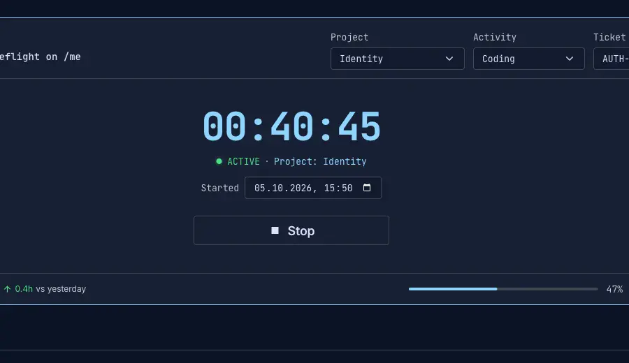
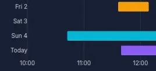
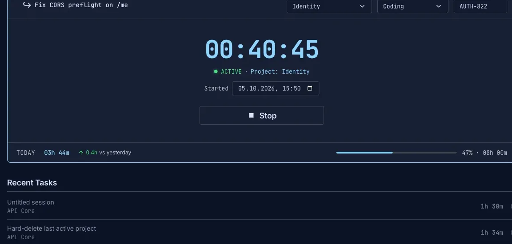
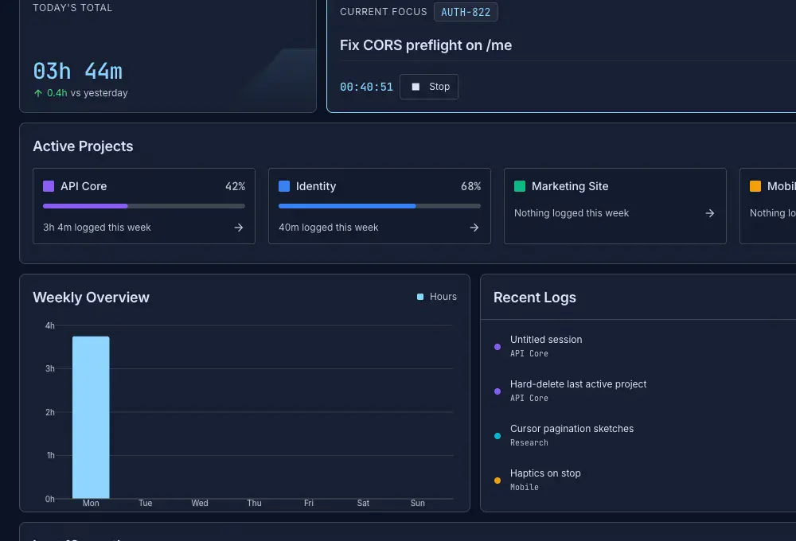
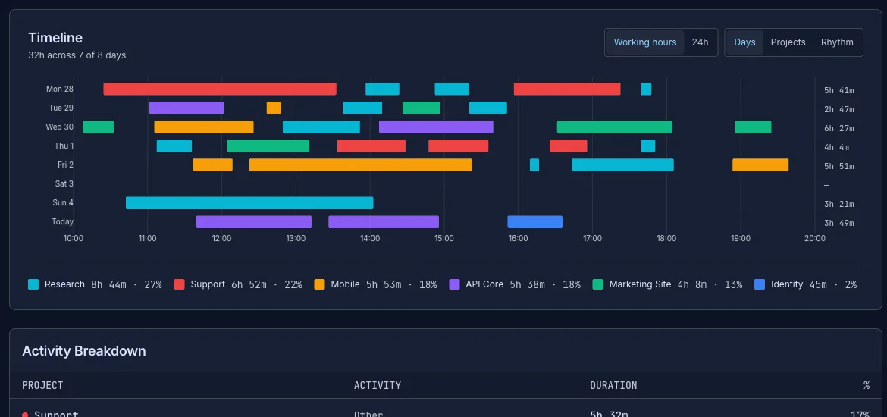
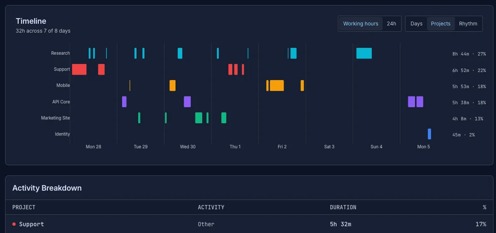
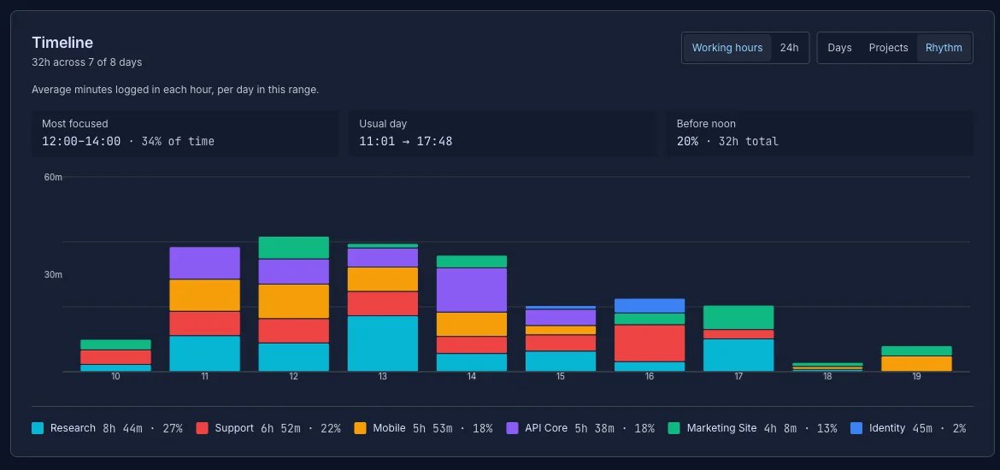

/timer
One active session
Start or stop. While idle, the note suggests earlier tasks.

Focus timer · v1.3.0
A local-first focus timer: start a session, tag the project, read your week at a glance.


Live capture of the daily driver
the product
Keyboard-first. High density. One session at a time. Built to answer a simple question: where did the hours go.
/timer
Start or stop. While idle, the note suggests earlier tasks.

/dashboard
Today’s total, current focus, the week in bars.

/insights
The timeline card on Insights shows when the time was logged and how it spread across days and projects. One card, two toggles. Select a view.
days
One row per day. Each session sits where it fell on the clock; overlaps take sub-lanes. The day total is on the right.



GET /sessions?from&to, not the whole history.
around every screen
▶ HH:MM:SS in the tab title and a dot
on the icon.
I did not write every line by hand. The docs did the steering.
01 plan
Agents help shape the work. I decide what ships. Design tokens, brand, and the session model stay human decisions.
02 implement
Agents write most of the code. The stack does not change for convenience: SvelteKit, TypeScript, Go, the same dark IDE chrome.
03 review
I read the diff. If it would not survive a workday on the timer, it does not land. Agent output is held to the same rules as everything else.
One row per day. Each session sits where it fell on the clock; overlaps take sub-lanes. The day total is on the right.
One row per project. Each day is a column of the clock window, so nights do not eat the width. The project total and share are on the right.
Average minutes per hour of day, stacked by project. Plus the most focused two hours, the usual first start → last end, and the share before noon.